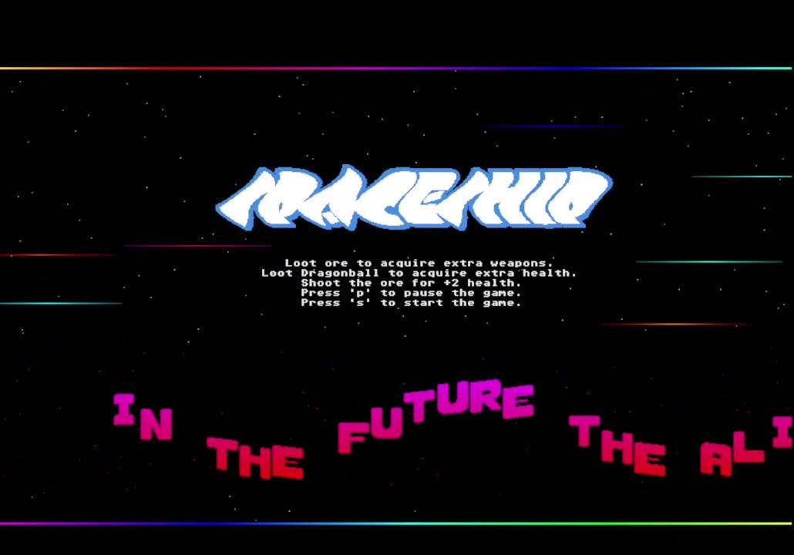
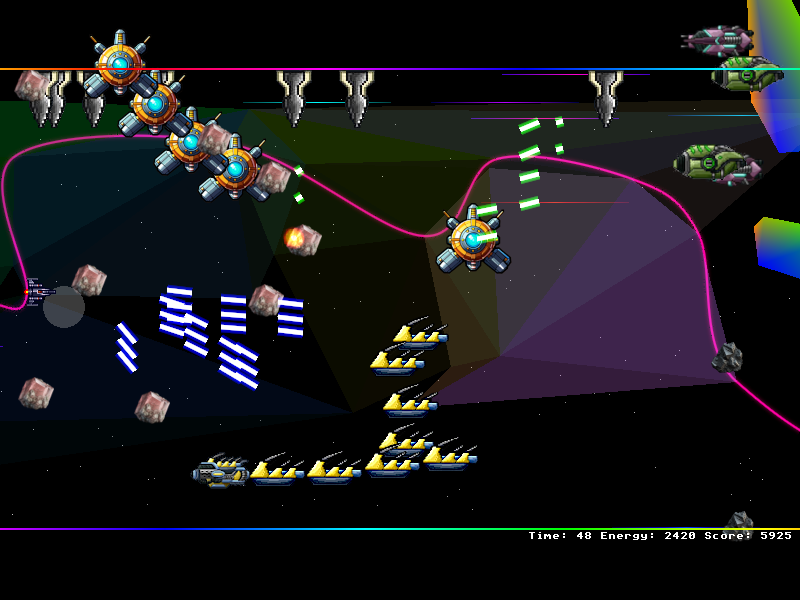
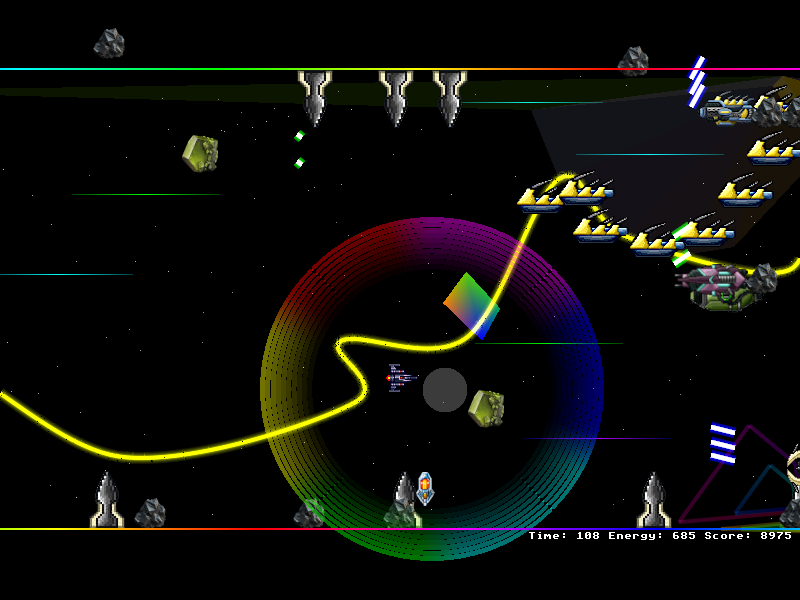
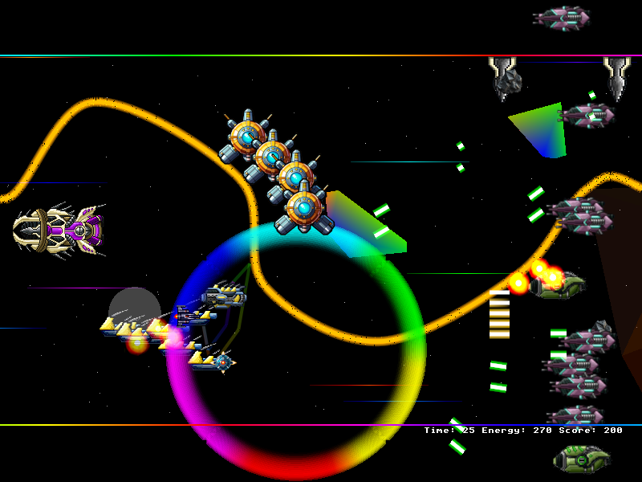
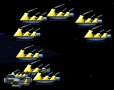
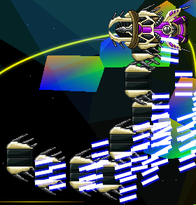
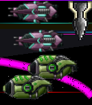
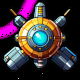

_________ .__ .__ / _____/__________ ____ ____ _____| |__ |__|_____ \_____ \\____ \__ \ _/ ___\/ __ \ / ___/ | \| \____ \ / \ |_> > __ \\ \__\ ___/ \___ \| Y \ | |_> > /_______ / __(____ /\___ >___ >____ >___| /__| __/ \/|__| \/ \/ \/ \/ \/ |__|
🚀 Retro Arcade 2d side-scroller bullet-hell shmup game: 🚀 Spaceship 🚀


Attention all pilots! The future of Earth hangs by a thread. Alien forces are on the brink of conquering our planet, and the survival of humanity depends on you! As an elite spaceship pilot, you are our last hope.
🚀 Your mission:
- Navigate the Asteroid Belt: Masterfully weave through the vast expanse of asteroids between Mars and Jupiter. Use the seemingly chaotic environment to your advantage.
- Strategic Maneuvers: Employ the dangerous asteroids as cover in a high-stakes game of hide-and-seek. Outwit alien enemies by making the most of your surrounding.
- Eliminate Alien Threats: Engage and defeat any alien forces you encounter, ensuring Earth's safety.
Good luck, hero. The fate of Earth depends on you! 🚀✨
  
- GFX: Atari ST/Custom
- Font: Atari ST
- Music: Atari ST Chiptune
- FX: Atari ST/Custom
| Units & Upgrades | |
|---|---|
| Boss "Yellow Snake" |  |
| Boss "Dragonlord" |  |
| Ships |  |
| Spacestation |  |
- Download the appropriate archive for your platform.
- Extract the contents to a desired location.
- Install OpenGL (included in the archive).
- Run the .exe file to start the game.

💚 Game Download 💚:
- Latest: Download for Windows 11 (64-Bit) [ MD5 Hash fbd8d2be12dbc4b20dd85ea94de592e4 ]
- Download for Windows 11 (64-Bit) [ MD5 Hash f66a0274a89ff6219cd09283bd70fcf9 ]
- Download for Windows 11 32-Bit
- Download for Windows 11
- Download for Windows XP
Love playing Spaceship? Help fuel the journey! Your support keeps development going, improves features, and brings new exciting updates.
💚 Donate Bitcoin Cash (BCH) & support indie game development!
📌 BCH Address: bitcoincash:qrvhk77ujevd9n7jse4jewm99eg95at7tvc6m9v2vv
Every little bit helps! Thank you for being part of this mission. 🚀✨
✨ Devlog:
- 28.04.25 Major update: general Bug fixes, improved Stage & GFX, new BG GFX: Infinite Cosmic Space String v2, new GFX: Nebula, new GFX: procedurally generated floating platforms (pathways), 1x new weapon, faster rendering, Shader GFX.
- 01.04.25 Major update: 64-Bit, 2x New Boss Units, 1x Station Unit, New Shield Upgrade, New BG Gfx Infinite Cosmic Space String
- 03.03.25 Medium update: Bugfixes, much faster rendering, new beautiful, real-time, infinite background terrain system using procedurally generated triangle, player sprite is always on top
- 10.02.25 Medium update: Bugfixes, new weapon, new FX: aura, transparency, damage
- 21.01.25 Medium update: Bugfixes, new enemy, new weapons & bullet patterns
- 11.10.24 Major update game & gfx
- 08.06.24 Bugfix Win 11 compatibility